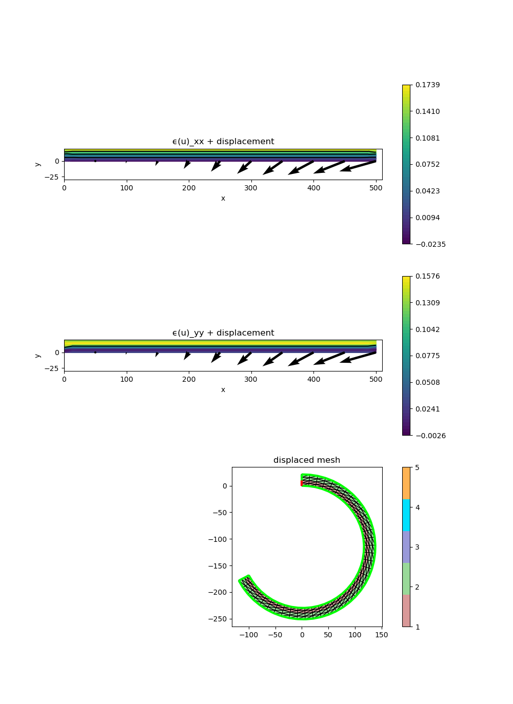

207 : Nonlinear Elasticity Bimetal 2D
This example computes the displacement field $u$ of the nonlinear elasticity problem
\[\begin{aligned} -\mathrm{div}(\mathbb{C} (\epsilon(u)-\epsilon_T)) & = 0 \quad \text{in } \Omega \end{aligned}\]
where an isotropic stress tensor $\mathbb{C}$ is applied to the nonlinear strain $\epsilon(u) := \frac{1}{2}(\nabla u + (\nabla u)^T + (\nabla u)^T \nabla u)$ and a misfit strain $\epsilon_T := \Delta T \alpha$ due to thermal load caused by temperature(s) $\Delta T$ and thermal expansion coefficients $\alpha$ (that may be different) in the two regions of the bimetal.
This example demonstrates how to setup a (parameter- and region-dependent) nonlinear expression and how to assign it to the problem description.
module Example207_NonlinearElasticityBimetal2D
using GradientRobustMultiPhysics
using ExtendableGrids
using GridVisualize
# parameter-dependent nonlinear operator uses a callable struct to reduce allocations
mutable struct nonlinear_operator{T}
λ::Vector{T}
μ::Vector{T}
ϵT::Vector{T}
end
function strain!(result, input)
result[1] = input[1]
result[2] = input[4]
result[3] = input[2] + input[3]
# add nonlinear part of the strain 1/2 * (grad(u)'*grad(u))
result[1] += 1//2 * (input[1]^2 + input[3]^2)
result[2] += 1//2 * (input[2]^2 + input[4]^2)
result[3] += input[1]*input[2] + input[3]*input[4]
return nothing
end
# kernel for nonlinear operator
(op::nonlinear_operator)(result, input, item) = (
# input = grad(u) written as a vector
# item[3] is the region number where operator is currently evaluated
# compute strain and subtract thermal strain (all in Voigt notation)
strain!(result, input);
result[1] -= op.ϵT[item[3]];
result[2] -= op.ϵT[item[3]];
# multiply with isotropic stress tensor
# (stored in input[5:7] using Voigt notation)
input[5] = op.λ[item[3]]*(result[1]+result[2]) + 2*op.μ[item[3]]*result[1];
input[6] = op.λ[item[3]]*(result[1]+result[2]) + 2*op.μ[item[3]]*result[2];
input[7] = 2*op.μ[item[3]]*result[3];
# write strain into result
result[1] = input[5];
result[2] = input[7];
result[3] = input[7];
result[4] = input[6];
return nothing
)
const op = nonlinear_operator([0.0,0.0],[0.0,0.0],[0.0,0.0])
# everything is wrapped in a main function
function main(;
ν = [0.3,0.3], # Poisson number for each region/material
E = [2.1,1.1], # Elasticity modulus for each region/material
ΔT = [580,580], # temperature for each region/material
α = [1.3e-5,2.4e-4], # thermal expansion coefficients
scale = [20,500], # scale of the bimetal, i.e. [thickness, width]
nref = 0, # refinement level
order = 2, # finite element order
verbosity = 0, # steers talkativeness
Plotter = nothing)
# set log level
set_verbosity(verbosity)
# compute Lame' coefficients μ and λ from ν and E
# and thermal misfit strain and assign to operator operator
op.μ .= E ./ (2 .* (1 .+ ν.^(-1)))
op.λ .= E .* ν ./ ( (1 .- 2*ν) .* (1 .+ ν))
op.ϵT .= ΔT .* α
# generate bimetal mesh
xgrid = bimetal_strip2D(; scale = scale, n = 2*(nref+1))
# prepare nonlinear operator (one for each bimetal region)
nonlin_operator = NonlinearForm(Gradient, [Gradient], [1], op, [4,4,7]; name = "C(ϵ(u)-ϵT):∇v", regions = [1,2], dependencies = "I", bonus_quadorder = 3, sparse_jacobian = true, newton = true)
# generate problem description and assign nonlinear operators
Problem = PDEDescription("nonlinear elasticity problem")
add_unknown!(Problem; unknown_name = "u", equation_name = "displacement equation")
add_operator!(Problem, 1, nonlin_operator)
add_boundarydata!(Problem, 1, [1], HomogeneousDirichletBoundary)
@show Problem
# create finite element space and solution vector
FES = FESpace{H1Pk{2,2,order}}(xgrid)
Solution = FEVector("u_h", FES)
# solve
solve!(Solution, Problem; maxiterations = 10, target_residual = 1e-9, show_statistics = true)
# displace mesh and plot
p = GridVisualizer(; Plotter = Plotter, layout = (3,1), clear = true, resolution = (1000,1500))
grad_nodevals = nodevalues(Solution[1], Gradient)
strain_nodevals = zeros(Float64,3,num_nodes(xgrid))
for j = 1 : num_nodes(xgrid)
strain!(view(strain_nodevals,:,j), view(grad_nodevals,:,j))
end
scalarplot!(p[1,1], xgrid, view(strain_nodevals,1,:), levels = 3, colorbarticks = 7, xlimits = [0, scale[2]+10], ylimits = [-30, scale[1]], title = "ϵ(u)_xx + displacement")
scalarplot!(p[2,1], xgrid, view(strain_nodevals,2,:), levels = 1, colorbarticks = 7, xlimits = [0, scale[2]+10], ylimits = [-30, scale[1]], title = "ϵ(u)_yy + displacement")
vectorplot!(p[1,1], xgrid, evaluate(PointEvaluator(Solution[1], Identity)), spacing = [50,25], clear = false)
vectorplot!(p[2,1], xgrid, evaluate(PointEvaluator(Solution[1], Identity)), spacing = [50,25], clear = false)
displace_mesh!(xgrid, Solution[1])
gridplot!(p[3,1], xgrid, linewidth = 1, title = "displaced mesh")
end
function bimetal_strip2D(; scale = [1,1], n = 2, anisotropy_factor::Int = Int(ceil(scale[2]/(2*scale[1]))))
X=linspace(0, scale[2], (n+1)*anisotropy_factor)
Y=linspace(0, scale[1], 2*n+1)
xgrid=simplexgrid(X,Y)
cellmask!(xgrid, [0.0,0.0], [scale[2],scale[1]/2], 1)
cellmask!(xgrid, [0.0,scale[1]/2], [scale[2],scale[1]], 2)
bfacemask!(xgrid, [0.0,0.0], [0.0,scale[1]/2], 1)
bfacemask!(xgrid, [0.0,scale[1]/2], [0.0,scale[1]], 2)
bfacemask!(xgrid, [0.0,0.0], [scale[2],0.0], 2)
bfacemask!(xgrid, [scale[2],0.0], [scale[2],scale[1]], 2)
bfacemask!(xgrid, [0.0,scale[1]], [scale[2],scale[1]], 2)
return xgrid
end
endThis page was generated using Literate.jl.
Default output:
julia> Example207_NonlinearElasticityBimetal2D.main()
Explored path: SparsityDetection.Path(Bool[], 1)
Problem =
PDE-DESCRIPTION
===============
system name = nonlinear elasticity problem
id | unknown name / equation name
[1] | u / displacement equation
LHS block | PDEOperator(s)
[1,1] | C(ϵ(u)-ϵT):∇v [AD-Newton] [∂u] (APT = NonlinearForm, AT = ON_CELLS, regions = [1, 2])
RHS block | PDEOperator(s)
[1] | none
BoundaryOperator[1] : HomogeneousDirichletBoundary -> [1]
ITERATION | LSRESIDUAL | NLRESIDUAL | TIME ASSEMBLY/SOLVE/TOTAL (s)
-----------------------------------------------------------------------
init | | 8.08e+00/3.70e-06/8.09e+00
1 | 2.223172e-11 | 1.112791e+03 | 2.05e-02/6.17e-03/2.69e-02
2 | 4.514390e-11 | 5.028207e+02 | 2.03e-02/5.87e-03/2.63e-02
3 | 3.439072e-11 | 2.556105e+02 | 2.60e-02/4.89e-03/3.11e-02
4 | 1.938374e-11 | 9.907406e+01 | 2.05e-02/4.52e-03/2.52e-02
5 | 1.080599e-11 | 2.609879e+01 | 1.89e-02/4.42e-03/2.35e-02
6 | 8.251240e-12 | 3.177219e+00 | 2.16e-02/3.49e-02/5.67e-02
7 | 8.073878e-12 | 7.589101e-02 | 2.16e-02/5.33e-03/2.72e-02
8 | 8.363450e-12 | 6.283943e-05 | 2.19e-02/5.45e-03/2.76e-02
9 | 7.905052e-12 | 6.572255e-11 | 2.17e-02/4.97e-03/2.69e-02
total | | 8.28e+00/7.66e-02/8.37e+00
